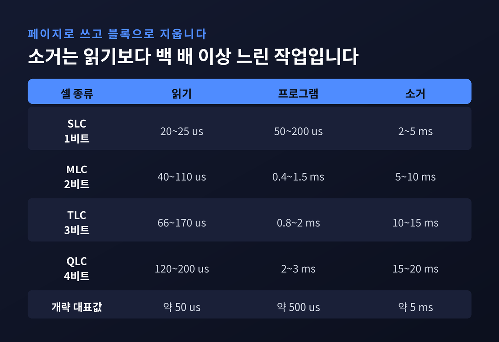
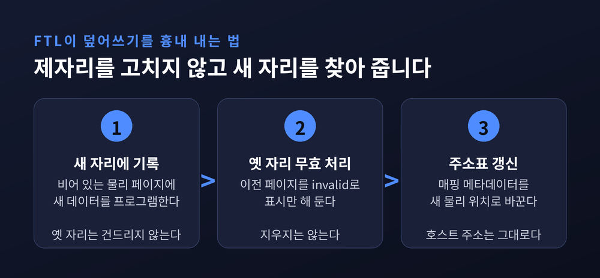
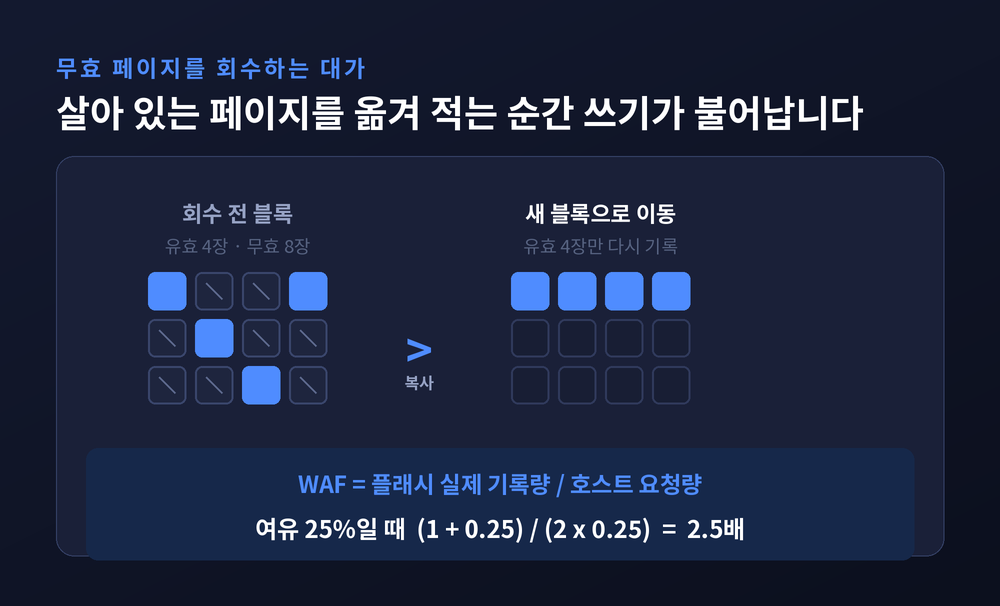
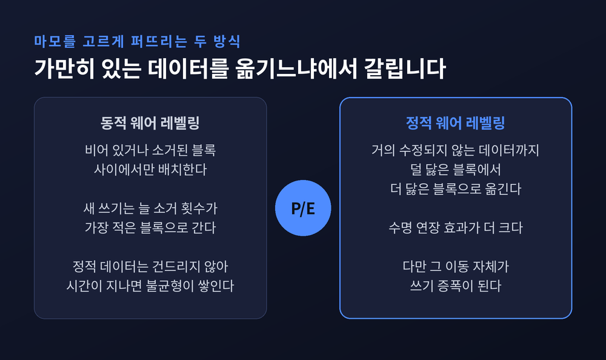
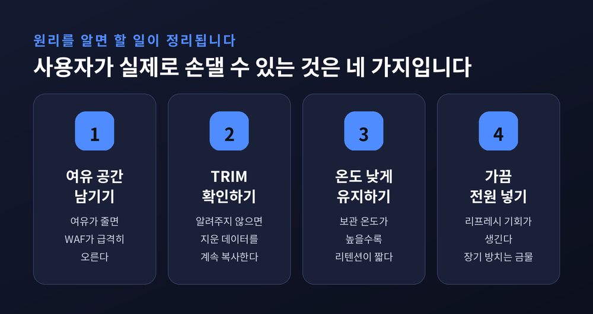

SSD 덮어쓰기 불가 원리 — FTL과 웨어 레벨링이 수명을 지키는 방식

이번 글에서는 SSD가 왜 제자리 덮어쓰기를 못하는지 정리해 보겠습니다. 파일 하나를 고쳤을 뿐인데 SSD 안에서는 24MB짜리 블록이 통째로 지워지는 일이 벌어집니다. 그 간극을 메우려고 만들어진 것이 플래시 변환 계층(FTL)과 웨어 레벨링입니다.
세 줄 요약
- NAND 플래시는 페이지 단위로 쓰고 블록 단위로 지웁니다. 이미 쓴 페이지는 블록 전체를 지우기 전까지 다시 쓸 수 없습니다.
- 그래서 FTL이 덮어쓰기를 흉내 냅니다. 새 자리에 쓰고, 옛 자리를 무효로 표시하고, 주소표만 고칩니다.
- 그 결과 가비지 컬렉션·쓰기 증폭·웨어 레벨링이 줄줄이 따라옵니다. SSD 수명 관리의 거의 전부가 여기서 나옵니다.
지우기와 쓰기가 같은 단위가 아닙니다
하드디스크는 자기 방향을 뒤집으면 그만이었습니다. 512바이트 섹터 하나를 몇 번이고 제자리에서 고쳐 쓸 수 있었습니다.
NAND 플래시는 다릅니다. 읽기와 쓰기는 페이지 단위지만, 지우기는 블록 단위입니다. 이 비대칭 하나가 SSD 설계 전체를 규정합니다.
숫자로 보면 더 분명합니다. 3D NAND의 페이지는 16KB 정도이고, 이레이즈 블록은 MLC 기준 16MiB, TLC 기준 24MiB에 이릅니다. 16KB 페이지에 16MB 블록이면 블록 하나에 페이지가 1,024장 들어 있다는 뜻입니다. 최소 소거 단위가 통상 256페이지라는 기술 문헌의 서술과도 결이 같습니다.
4KB짜리 설정 파일 한 줄을 고치려고 24MB를 지워야 한다면, 누구라도 다른 방법을 찾을 것입니다.
셀 하나만 골라 지울 수 없는 이유
컨트롤러가 게을러서가 아닙니다. 소자의 물리가 그렇습니다.
프로그램(1→0)은 셀의 컨트롤 게이트에 프로그램 전압을 걸고 기판·소스·드레인을 접지해서, 파울러-노드하임 터널링으로 전자를 플로팅 게이트에 밀어 넣는 동작입니다. 전자를 "넣는" 한 방향 작업이라 페이지 단위로 세밀하게 제어할 수 있습니다.
소거(0→1)는 반대입니다. 컨트롤 게이트를 접지하고 셀 바디, 즉 p-well 쪽에 최대 20V에 이르는 고전압을 걸어 전자를 채널로 빼냅니다.
여기가 결정적입니다. p-well에 고전압이 걸리는 순간, 그 웰을 공유하는 셀 전부가 똑같은 조건에 놓입니다. 주변 회로를 지키려면 선택 라인을 모두 접지해야 하고, 그러지 않으면 n–p 접합이 순방향으로 열려 차지 펌프에 과부하가 걸립니다. 셀 하나만 골라 지운다는 발상은 회로 차원에서 실용적이지 않습니다.
시간 비용도 한쪽으로 크게 기울어 있습니다.
| 종류 | 읽기 | 프로그램 | 소거 |
|---|---|---|---|
| SLC | 20~25 μs | 50~200 μs | 2~5 ms |
| MLC | 40~110 μs | 0.4~1.5 ms | 5~10 ms |
| TLC | 66~170 μs | 0.8~2 ms | 10~15 ms |
| QLC | 120~200 μs | 2~3 ms | 15~20 ms |
TLC 기준으로 읽기는 100마이크로초 남짓인데 소거는 10밀리초를 넘습니다. 백 배 이상의 격차입니다. 개략값으로 페이지 읽기 50μs, 프로그램 500μs, 블록 소거 5ms를 드는 문헌도 있으니 자릿수는 일관됩니다. 같은 P/E 사이클을 가진 블록들 사이에서도 소거 시간 편차가 커서, 3D TLC에서 표준편차 2.7ms가 관측되기도 했습니다.

FTL — 덮어쓰기를 흉내 내는 계층
그래서 SSD 컨트롤러는 덮어쓰기를 정직하게 수행하지 않습니다. 대신 다른 자리에 쓰고 주소표를 고칩니다.
호스트가 "논리 블록 1000번을 새 값으로 바꿔라"라고 요청하면, FTL은 이렇게 처리합니다.
- 새 데이터를 비어 있는 물리 페이지에 프로그램합니다.
- 기존 데이터가 있던 페이지를 무효(invalid)로 표시합니다.
- 매핑 메타데이터를 새 위치로 갱신합니다.
호스트가 보는 주소는 그대로입니다. 그 아래에서 물리적 위치만 조용히 바뀝니다. 이 주소 변환 장부가 플래시 변환 계층입니다.
매핑을 어떤 단위로 기록할지가 설계의 갈림길입니다.
페이지 레벨 매핑은 논리 페이지 하나하나를 물리 페이지에 1:1로 대응시킵니다. 어느 빈 페이지에든 쓸 수 있어 임의 쓰기에 강합니다. 문제는 장부가 거대해진다는 점입니다.
블록 레벨 매핑은 논리 블록 단위로만 기록합니다. 장부는 작지만, 블록 안 페이지 하나만 갱신해도 블록 전체 소거로 번질 수 있습니다. 쓰기가 많은 작업에서 성능이 나쁩니다.
하이브리드 매핑은 절충안입니다. 물리 블록을 데이터 블록과 로그 블록으로 나눠, 최초 기록은 데이터 블록에, 갱신분은 로그 블록에 쌓습니다.
장부 크기는 생각보다 부담입니다. NAND 1TB당 DRAM 1GB가 업계의 표준적 요구치로 통용되고, 평균 쓰기 크기를 4KB로 잡고 계산하면 1TB에 약 3GB가 필요하다는 산출도 나옵니다. 가정하는 매핑 단위에 따라 답이 달라지는 셈입니다.
여기서 나온 절충이 DFTL입니다. 페이지 매핑 테이블 전체는 플래시에 두고, 최근에 많이 쓰인 일부만 SRAM에 캐시합니다. 대부분의 작업 부하가 시간적 지역성을 가진다는 관찰에 기댄 설계입니다. 저가형 SSD에 DRAM이 없어도 그럭저럭 굴러가는 배경이기도 합니다.

셀에 비트를 더 담을수록 수명이 줄어듭니다
같은 셀에 몇 비트를 담느냐는 전압 창을 몇 등분하느냐의 문제입니다. MLC는 4개 상태, TLC는 8개 상태, QLC는 16개 상태로 나눕니다.
레벨 간격이 좁아지면 프로그램 시간이 늘고 더 정교한 ECC가 필요해집니다. 셀에 가해지는 전기적 스트레스도 커집니다. 밀도와 수명이 반비례하는 것은 우연이 아니라 구조입니다.
| 종류 | 셀당 비트 | 전압 상태 | P/E 사이클(대표값) |
|---|---|---|---|
| SLC | 1비트 | 2개 | 약 100,000 |
| MLC | 2비트 | 4개 | 약 10,000 |
| TLC | 3비트 | 8개 | 약 3,000 |
| QLC | 4비트 | 16개 | 약 1,000 |
다만 이 표를 절대값으로 받아들이지는 않으시는 편이 좋겠습니다. TLC만 해도 자료마다 다릅니다. 3,000으로 적는 곳이 있고, 특정 세대의 실제 정격은 1,000~1,500이며 이후 세대에서 2,000, 3,000으로 올라갔다고 정리하는 곳도 있습니다. QLC도 초기에는 100~1,000으로 여겨졌지만 최근 제품은 4,000을 주장합니다. 원시 셀 특성만이 아니라 ECC와 컨트롤러 알고리즘이 실효 수명을 크게 끌어올린다는 점을 함께 봐야 공정합니다.
실제 제품 수치로 감을 잡아 보겠습니다. 삼성 990 PRO 2TB는 5년 또는 1,200TBW 중 먼저 도달하는 쪽까지 보증합니다. 1,200TBW를 5년에 나누면 하루 600GB씩 5년 내내 써야 닿는 양입니다. 일반 사용자가 걱정할 숫자는 아닙니다. TBW는 갑자기 멈추는 한계선이 아니라 보증과 계획을 위한 기준값이고, 다 쓰면 보통 읽기 전용 모드로 넘어가 데이터를 지킵니다.
가비지 컬렉션과 쓰기 증폭
FTL이 옛 페이지를 무효로만 표시하고 넘어가면, 무효 페이지가 계속 쌓입니다. 언젠가는 회수해야 합니다.
가비지 컬렉션은 이렇게 움직입니다. 어떤 블록에서 아직 살아 있는 페이지만 읽어 다른 곳에 다시 프로그램하고, 완전히 무효가 된 블록을 소거해 빈 풀로 돌려보냅니다.
여기서 사용자가 요청하지 않은 쓰기가 발생합니다. 이것이 쓰기 증폭(Write Amplification)입니다.
WAF = 플래시에 실제로 기록된 데이터 ÷ 호스트가 요청한 데이터
완전 랜덤 쓰기 정상상태에서는 근사식이 알려져 있습니다. 여유 공간 비율을 X라 할 때 WAF는 대략 (1 + X) / 2X입니다. 총 플래시 1.0TB에 사용자 노출 용량이 800GB라면 X는 25%이고, WAF는 (1.25) ÷ (0.5) = 2.5가 됩니다. 1GB를 쓰면 안에서는 2.5GB가 기록된다는 뜻입니다.
그래서 SSD 제조사는 일부러 용량을 숨겨 둡니다. 오버프로비저닝입니다. 28% 오버프로비저닝이란 표기 100GB 드라이브에 실제로는 플래시 128GB가 들어 있다는 의미입니다. 여유가 클수록 가비지 컬렉션이 옮겨야 할 유효 페이지가 줄고, WAF가 내려가고, 수명이 늘어납니다.
TRIM은 이 그림의 반대편을 담당합니다. 운영체제가 "이 블록은 더 이상 쓰지 않는다"고 알려 주는 명령입니다. 알려 주지 않으면 컨트롤러는 그 데이터를 여전히 살아 있는 것으로 믿고, 가비지 컬렉션 때마다 쓸모없는 데이터를 성실하게 복사합니다. SSD 입장에서 파일 삭제는 본래 보이지 않는 사건이기 때문입니다.

웨어 레벨링 — 고르게 닳게 만드는 기술
블록마다 P/E 사이클 한도가 정해져 있으니, 특정 블록만 집중적으로 닳으면 드라이브 전체가 그만큼 빨리 끝납니다. 그래서 컨트롤러는 마모를 분산시킵니다.
방식은 둘로 나뉩니다.
동적 웨어 레벨링은 비어 있거나 이미 소거된 블록들 사이에서만 데이터를 배치합니다. 새 쓰기는 늘 소거 횟수가 가장 적은 블록으로 갑니다. 구현이 가볍고 부담이 적습니다. 한계도 분명합니다. 가만히 있는 정적 데이터는 건드리지 않습니다. 몇 년째 그대로인 사진 폴더가 앉아 있는 블록은 계속 새것으로 남고, 나머지만 닳습니다.
정적 웨어 레벨링은 거기까지 손을 댑니다. 거의 수정되지 않는 데이터를 덜 닳은 블록에서 더 닳은 블록으로 옮겨, 마모를 드라이브 전체에 고르게 퍼뜨립니다. 수명 연장 효과는 정적 쪽이 동적보다 상당히 크다는 것이 일반적인 평가입니다.
대가가 없지는 않습니다. 사용자가 요청한 적 없는 이동이므로 그 자체가 쓰기 증폭입니다. 그래서 실제 제품은 대개 두 방식을 섞어 균형을 잡습니다.
직관과 어긋나는 지점이 여기 있습니다. 건드리지 않은 파일도 SSD 안에서는 조용히 이사를 다닙니다. 가만히 두는 것이 셀에게는 오히려 불공평한 일이 됩니다.

읽기만 해도 닳고, 꺼 두어도 흐려집니다
쓰기만 수명을 갉아먹는 것은 아닙니다.
읽기 방해(read disturb)가 있습니다. 어떤 페이지를 읽으려면 대상 워드라인에는 기준 전압을 걸지만, 같은 블록의 나머지 워드라인 전부에는 높은 통과 전압(Vpass)을 걸어야 합니다. 이 전압이 읽지도 않은 셀에 전자를 조금씩 주입해 문턱 전압을 밀어 올립니다. 읽기를 반복할수록 누적됩니다. 연구에서는 같은 블록의 다른 워드라인을 1회, 1만 회, 10만 회 읽어 각각 다른 수준의 오류를 유도했습니다.
컨트롤러의 대응은 리프레시입니다. 주기적으로 블록을 읽어 ECC로 정정한 뒤, 정정된 데이터를 새 위치에 다시 프로그램하고 원래 블록을 소거합니다. 읽기가 결국 쓰기를 부르는 구조입니다. 블록 단위로 Vpass를 조절하는 기법으로 수명을 평균 21% 늘렸다는 연구 결과도 있습니다.
데이터 리텐션도 짚어야 합니다. 전자는 시간이 지나면 조금씩 새어 나갑니다. JEDEC 표준이 요구하는 기준은 이렇습니다.
| 구분 | 동작 조건 | 전원 차단 후 보존 요구 |
|---|---|---|
| 클라이언트 SSD | 40°C, 하루 8시간 사용 | 30°C에서 1년 |
| 엔터프라이즈 SSD | 55°C, 하루 24시간 사용 | 40°C에서 3개월 |
오해하기 쉬운 숫자라 단서를 붙이겠습니다. 이 요구는 정격 수명을 전부 소진한 시점까지 내내 충족되어야 하는 최악 조건의 기준입니다. 새 드라이브가 1년 만에 데이터를 잃는다는 뜻이 아닙니다. 다만 "SSD를 서랍에 넣어 두면 영구 보관"이라는 통념이 성립하지 않는다는 것만은 분명합니다. 보관 온도가 높을수록 리텐션은 더 짧아집니다.
SLC 캐시 — 카탈로그 속도의 정체
요즘 SSD는 TLC나 QLC 셀 일부를 일부러 1비트 SLC 모드로 운용해 쓰기를 먼저 받아냅니다. 레벨을 두 개만 쓰니 훨씬 빠릅니다. 카탈로그에 적힌 최고 속도는 대개 이 구간의 숫자입니다.
캐시가 차면 사정이 달라집니다. 컨트롤러는 들어오는 데이터를 네이티브 셀에 직접 쓰면서, 동시에 캐시에 쌓인 데이터를 TLC/QLC로 접어 넣는(folding) 작업을 병행해야 합니다. 두 일을 한꺼번에 하니 더 느려집니다.
실측 사례의 폭이 큽니다. 순차 쓰기 3,000MB/s로 측정되던 QLC 드라이브가 100GB 폴더 복사에서 80MB/s까지 내려간 보고가 있고, 캐시 소진 후 네이티브 속도를 50~150MB/s로 적는 자료가 있습니다. 다른 자료는 100~400MB/s 범위를 들고, 잘 만든 QLC는 캐시가 마른 뒤에도 800~1,200MB/s를 유지한다고 적습니다. 7,000MB/s 정격 NVMe에 60GB 프로젝트를 복사하다 25GB 부근에서 400~800MB/s로 주저앉은 사례도 있습니다.
편차가 이만큼 크다는 것은, 하나의 숫자로 단정하기 어렵다는 뜻이기도 합니다. 제품 등급과 잔여 용량에 따라 결과가 달라집니다. 대용량 연속 쓰기를 자주 하신다면 최고 속도보다 지속 쓰기 속도를 보시는 편이 실제에 가깝습니다.
그래서 사용자는 무엇을 하면 되나
원리를 알면 할 일도 정리됩니다.
여유 공간을 남겨 두시길 권합니다. 오버프로비저닝 공식이 말하는 그대로입니다. 여유가 줄면 WAF가 급격히 올라가고, 가비지 컬렉션이 옮길 유효 페이지가 늘어납니다. 꽉 채운 SSD가 느려지는 이유는 심리적 착각이 아닙니다.
TRIM이 켜져 있는지 확인해 보시면 좋겠습니다. 현대 운영체제는 대개 기본으로 켜 두지만, 특이한 구성에서는 빠질 때가 있습니다.
온도를 낮게 유지하시는 편이 낫습니다. 리텐션은 온도에 민감합니다.
중요한 데이터를 SSD에 넣어 장기간 방치하지 않으시길 바랍니다. 가끔 전원을 넣어 주는 것만으로도 컨트롤러가 리프레시할 기회가 생깁니다.
아쉬운 점도 솔직히 적겠습니다. 위 항목들은 모두 간접적인 조치입니다. FTL 내부의 매핑 정책도, 가비지 컬렉션 시점도, 웨어 레벨링 강도도 사용자가 건드릴 수 없습니다. 펌웨어 안쪽은 여전히 닫혀 있는 상자입니다.

끝으로 한 마디만 더 드리겠습니다.
예전엔 저장장치를 "데이터를 적어 두는 판"으로 생각했습니다. 지금은 조금 다르게 봅니다. SSD 안에서는 주소가 끊임없이 재배치되고, 지우지 않은 데이터가 옮겨 다니고, 읽기만 해도 셀이 조금씩 흐려집니다. 가만히 있는 것처럼 보이는 동안에도 컨트롤러는 계속 일하고 있습니다.
"SSD는 데이터를 덮어쓰지 않습니다. 매번 새 자리를 찾아내고, 옛 자리를 잊을 뿐입니다."
내 SSD가 지금 조용한지 물으신다면, 아마 그렇지 않을 것이라고 답하겠습니다.